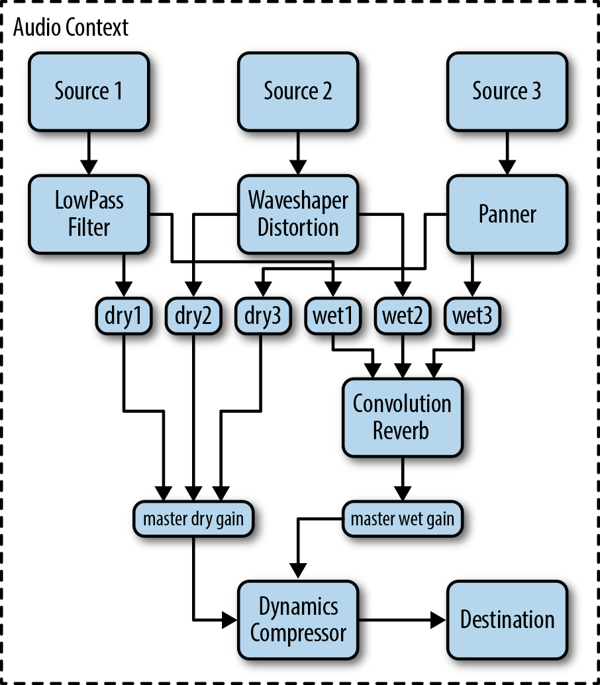

Audio as draggable units
Controls for manipulating audio
2 methods
Automatic streaming
Internal clock
Best for soundtracks
Array buffer
External clock
Mixing
Intended for Audio sound effects for games

createMediaElementSource
Filters on <audio> elements
Internal clock